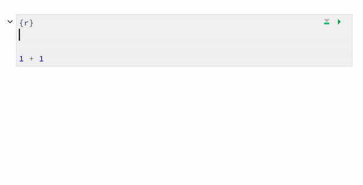
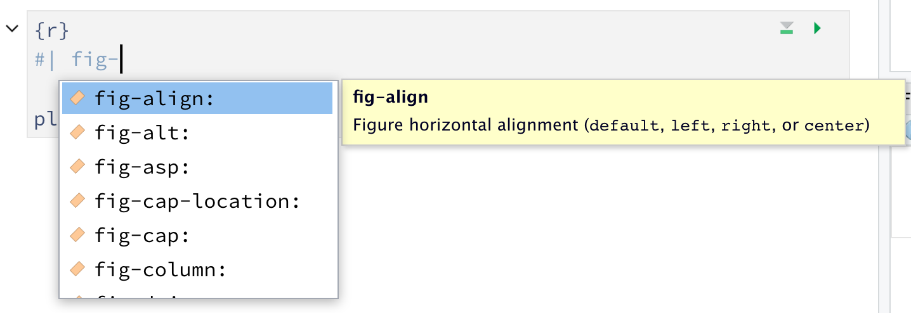
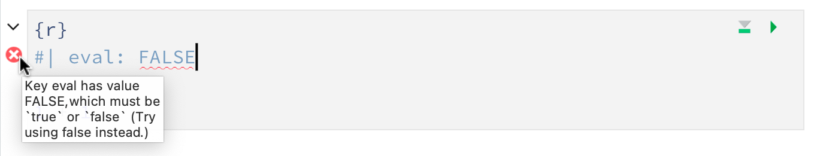

Quarto offers extensive YAML intelligence (completion and diagnostics) in the RStudio IDE and in VS Code for project files, YAML front matter, and executable cell options. This makes it easier to write YAML, whether you’re an expert or just starting to learn.
YAML completion
For example, let’s say you have a code chunk in your document and you don’t want it to be evaluated. The chunk option you should set is eval and it should be set to false. If you’re coming from R Markdown, you might be used to seeing this as eval = FALSE, but in YAMl style this option should be defined as eval: false.

This is super helpful when you just want to browse through all chunk options to see what’s available as well as when you can’t remember the full name of a chunk option, but remember a piece of it, e.g., fig-.

YAML completion works in .yml files as well.
![Writing a _quarto.yml from scratch. Typing the letter pr brings up project as a yaml field. A line break and then tab brings up various yaml fields available under project. type is chosen and set to website using yaml completion. In the next line website is typed as the yaml field. Moving to the next line and tabbing brings up various yaml fields as options under website. title is chosen and website title is set to Website Title. In the next line, tabbing again brings up key/value pair as an option. key is defined as left and underneath it in list form index.qmd and about.qmd are added.](quarto-yml.gif)
YAML diagnostics
YAML intelligence isn’t limited to code completion. If you have incorrect YAML it will also be highlighted when documents are saved. For example, if you typed eval: FALSE instead of eval: false, you’ll see the following.
